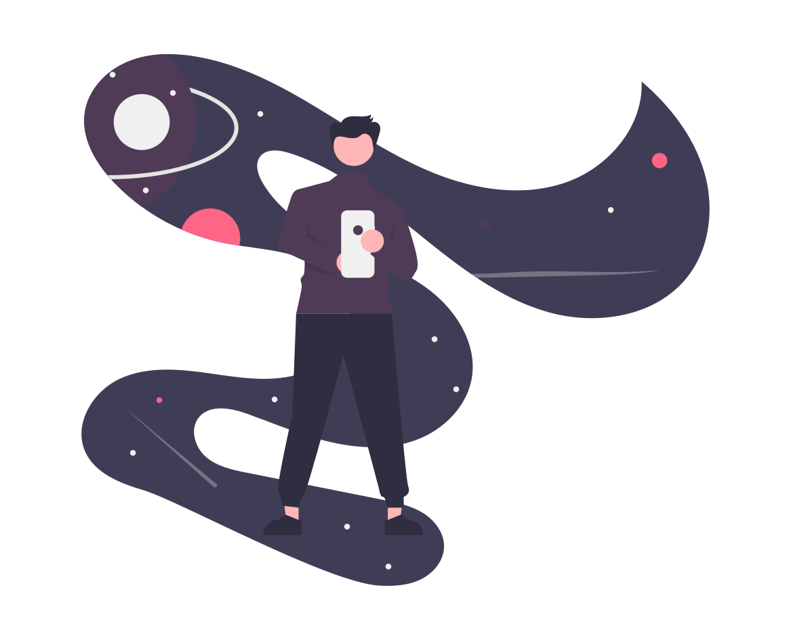

<!-- PAGINA INICIAL -->

<body>

  <!-- BACKGROUND DE BOLINHAS -->
  <div class="page-bg"></div>
  <div class="animation-wrapper">
    <div class="particle particle-1"></div>
    <div class="particle particle-2"></div>
    <div class="particle particle-3"></div>
    <div class="particle particle-4"></div>
  </div>


  <!-- CONTAINER BRANCO DO MEIO DA PÁG -->

  <div class="cor"><br>

    <h1>Welcome</h1>

    <div class="container">

      


      <!-- GERENCIAMENTO DE AMBIENTES -->
      <div class="divisao" routerLink="/context" >

        <div class="Icone">
          <mat-icon style="color: #4f3b56">calendar_today</mat-icon>
        </div>

        <button class="button" routerLink="/context" style="vertical-align: middle">
          <span>Resource Grid</span>
        </button>

      </div>

      <!-- GERENCIAMENTO DE USER -->
      <div class="divisao" routerLink="/client">

        <div class="Icone">
          <mat-icon style="color: #4f3b56">person</mat-icon>
        </div>

        <button class="button" routerLink="/client" style="vertical-align: middle">
          <span>User Administration</span>
        </button>

      </div>

      <!-- VISUALIZAÇÃO DE RECURSO -->
      <div class="divisao" routerLink="/mapping">

        <div class="Icone">
          <mat-icon style="color: #4f3b56">laptop</mat-icon>
        </div>

        <button class="button" routerLink="/mapping" style="vertical-align: middle">
          <span>Resource Management</span>
        </button>

        <br><br>
        <br><br>
      </div>
    </div>
  </div>
</body>